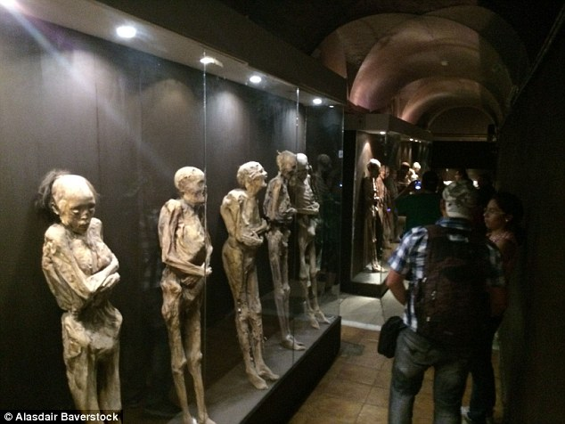

The Mummies of Guanajuato are a number of naturally mummified bodies interred during a cholera outbreak around Guanajuato, Mexico in 1833. The human bodies appear to have been disinterred between 1870 and 1958. During that time, a local tax was in place requiring a fee to be paid for "perpetual" burial. Some bodies for which the tax was not paid were disinterred, and some—apparently those in the best condition—were stored in a nearby building.
